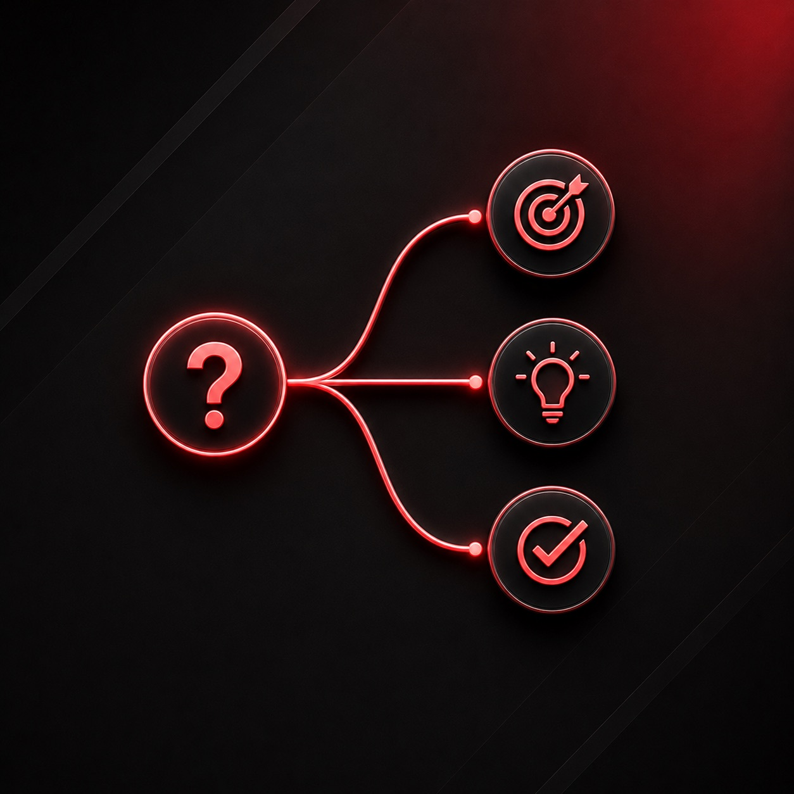
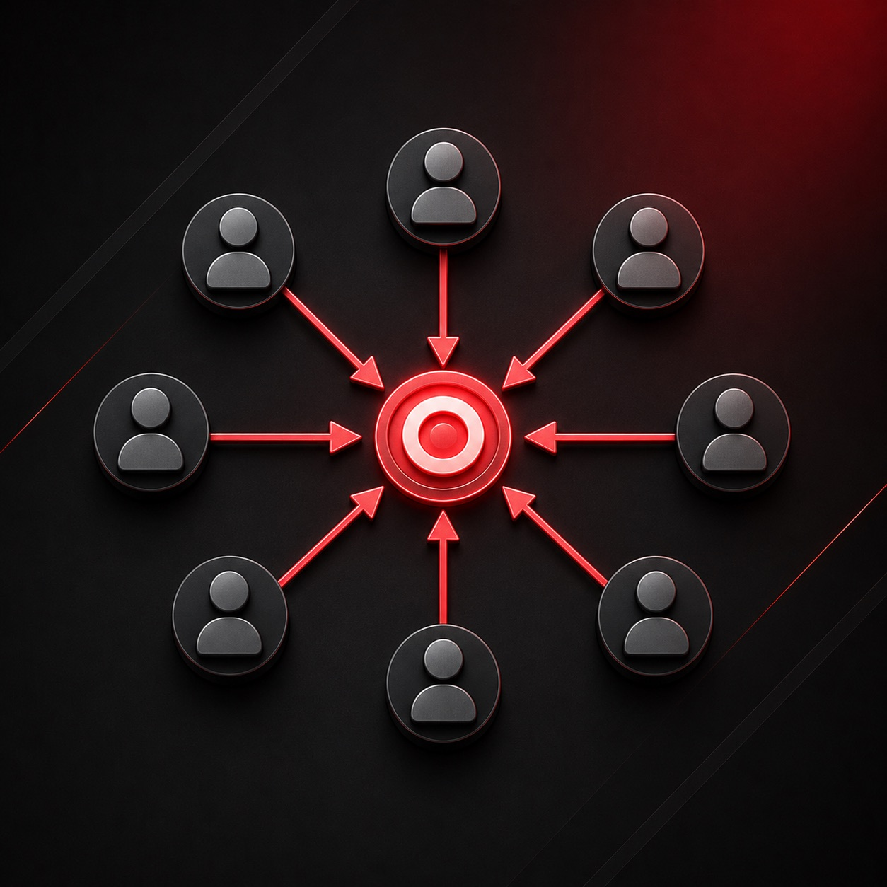

TOP SKILLS
こんな力を秘めています
1 本当の課題を見抜く 相手の言葉の奥にある、本当の問題を掴む。 詳しく見る
相手の言葉をそのまま受け取るのではなく、数字と対話の両方から、本当の問題がどこにあるかを見極めてきました。表に出ている要望の奥にある課題を掴むことを大事にしています。

2
原因を突き止めて、立て直す
うまくいかない原因を分解し、効くところから直す。
詳しく見る
うまくいかないとき、感覚で動くのではなく、原因を分解して、一番効くところから手を打つことを大事にしてきました。

3
巻き込んで、やり切る
限られた条件の中で、周りを巻き込み最後までやり切る。
詳しく見る
限られた時間と条件の中で、「何を優先すれば間に合うか」を見極めて、ベストな進め方を選んできました。そして一人で抱えず、巻き込んで最後までやり切ってきました。
どれもまだ磨き途中です。ここから、もっと伸ばしていきます。